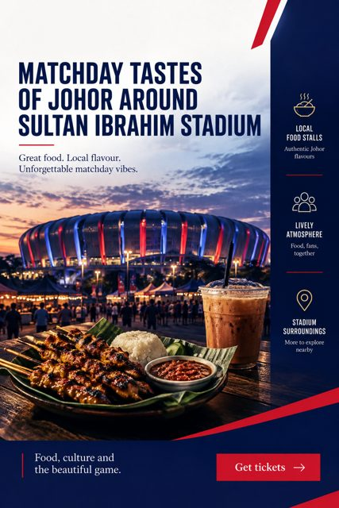
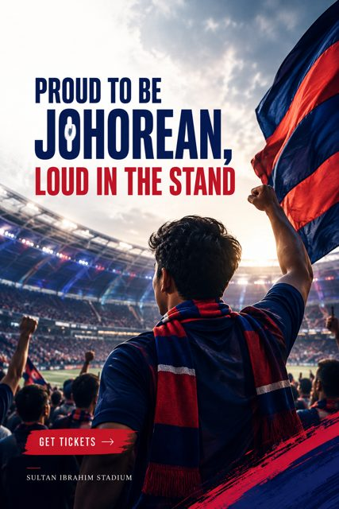

A JDT matchday for the whole Johor family
Plan a family day at Sultan Ibrahim Stadium: what the 40,000-seat home of JDT offers families, local food on matchday, prayer rooms and how to get tickets.

In short
A JDT home match is a Johor family occasion: Sultan Ibrahim Stadium in Iskandar Puteri seats 40,000, has prayer rooms, and has served local favourites such as bubur lambuk and mee kawah to fans on big European and Asian nights.
Who it is for
- Families who want a weekend outing in Johor
- Grandparents, parents and children who support the Southern Tigers together
- Visitors who want to experience Johor culture through football
What it solves
- Modern matchdays can feel far from the family traditions that made football part of Johor life.
- Parents worry whether a big stadium is easy and comfortable with young children.
- Visitors do not know what to expect beyond the 90 minutes.
What JDT offers
- A 40,000-capacity stadium opened in 2020
- Prayer rooms and modern amenities, as noted at the 2025 ACL Elite match
- Local food on matchday, such as bubur lambuk and mee kawah served at the JDT vs Buriram match
- Premium options: 12 corporate boxes and two premium lounges added for the 2025-26 season


Questions
Is Sultan Ibrahim Stadium suitable for families?
Sultan Ibrahim Stadium opened in 2020 with modern facilities, including prayer rooms, according to a Bernama report. With 40,000 seats it is a large venue, so families should arrive early, check the club's ground regulations before travelling and agree a meeting point with children.
What food is available at a JDT match?
Food varies by match. For the 2025 AFC Champions League Elite match against Buriram United, Bernama reported that local dishes such as bubur lambuk and mee kawah were prepared for fans at the stadium. Check club announcements before each match for current food options.
Where is the JDT stadium?
JDT play at Sultan Ibrahim Stadium in Iskandar Puteri (Gelang Patah, 81120), Johor, Malaysia. The stadium opened in 2020 and is the home ground of the Southern Tigers.
Are there premium seats for families or groups?
Yes. Before the 2025-26 season the club completed upgrades that added 12 corporate boxes and two premium lounges at Sultan Ibrahim Stadium, as reported by Malay Mail. Contact the club for availability and pricing.